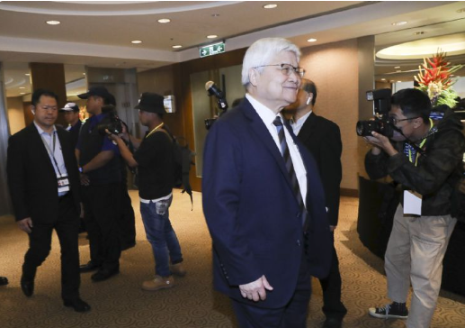

台积电找不到不好的理由！ 3/2纳米月产能超过10万片

台积电上半年业绩超标，下半年估将再次登峰，一如董事长魏哲家所说：「所有的AI芯片大厂中只有一家没下单。」
整体而言，全球半导体设备供应链除了国内外，几乎指望台积电大单挹注，台积电18日法说展望将牵动全球半导体产业风向。
台积电上半年业绩超标，下半年估将再次登峰，据半导体设备供应链表示，如董事长魏哲家所说：「所有的AI芯片大厂中只有一家没下单。」台积电目前5/3纳米制程家族产能利用率已达100%。
苹果（Apple）、英特尔（Intel）、高通（Qualcomm）、联发科等抢下单致使供不应求的3纳米更是加速扩产，下半年月产能逐步由10万片拉升至约12.5万片。
2纳米竹科与高雄厂也加快量产脚步，预计2纳米最快2025年第4季量产，目标月产能3万片，加上未来高雄厂放量，预计2厂区合计月产能将达12万~13万片，代工价格也由3纳米家族1.9万~2.1万美元大涨至2.5万~2.6万美元。
台积电2024年营运表现依旧展现「一个人的武林」气场。供应链表示，台积电之所以对于2024年与3/2纳米以下时代信心爆棚的关键在于魏哲家所说的「台积电没有竞争对手。」由于全球芯片大厂别无选择，只能在台积电投片下，台积电业绩「找不到不好的理由」，估计全年营收将飞越25%年增幅财测，逼近3成大关。
供应链表示，面对全球政经不确定性仍高，地缘政治风险仍未减，台积电对于成本、获利更加紧控，以龙头优势调涨代工报价，同时降低设备采购成本。
据了解，目前台积电5/4纳米订单满手，涨势在年初早已确立，而7/6纳米虽仅近8成，但折旧早就摊提完毕，获利丰渥且牌价并无调降，另也针对欧美日系设备材料供应大厂进行价格协商，双管齐下为台积电稳住获利能力。
供应链透露，台积电的12寸产利用率已至8成，5/3纳米制程维持满载，其中，代工价2万美元上下3纳米制程订单接不完，不仅有拿走一半产能的苹果，包括高通、联发科，以及新增的英特尔等多家大客户都在抢产能，也使得台积电加速扩产，原本2024年月产能估将达10万片，目前最新则是下半年月产能逐步拉升至约12.5万片。
最受关注的2纳米及以下制程进展方面，按先前规划，2纳米以竹科宝山、高雄为主，台中则在2027年以2纳米或A14（1.4纳米）为主，2029年A14与下一代A10更先进制程，将以台中及高雄为主。
而台积电于上半年技术论坛也首度发表A16技术，结合纳米片（Nanosheet）晶体管及创新的背面电轨（backside power rail）解决方案，预计2026年量产，而此预估会是高价High- NA EUV技术设备导入时代。
台积电先前表示，几乎所有的AI芯片业者都正与台积电合作，2纳米与3纳米在同一阶段时相比更高，2纳米将采用纳米片晶体管结构，目前制程技术研发进展顺利，如期在2025年进入量产，其量产曲线与N3相似。
2纳米也发展背面电轨解决方案，此一设计最适于HPC相关应用，预将在2025年下半推出供客户采用，并于2026年量产。
然据供应链透露，代工报价约2.5万美元的2纳米，进展相当顺利，宝山P1厂将于2024年第4季开始进入工程线验证，月产能约3,000片，预计2025年第4季进入量产，月产能约3万片。
接着P2厂也将加入，加上预计2024年第4季move-in的高雄厂，预计2026年放量，2厂区合计月产能将达12万~13万片，代工价格也由3纳米家族1.9万~2.1万美元，进一步涨至2.5万~2.6万美元。
但值得注意的是，过往先进制程首款量产产品为苹果iPhone，按台积电最新2纳米量产规划，首家采用客户将不是iPhone，但目前传出仍为苹果产品，包括AI芯片及用于iPad、Apple Watch芯片，或是超微（AMD）及扩大释单的英特尔等。
供应链进一步指出，台积电在台及海外扩产按步就班进行中，对于设备材料需求强劲，在取得议价优势下，也逐步扩大下单与拉货动能，包括ASML、应材、TEL等多家大厂下半年也都陆续取得大单，未来3年将陆续开始交货。
其中，ASML随着美锁中力道加剧，将更为仰赖台积电订单，先前魏哲家欧洲行，双方也谈妥EUV等新机大单。另在先进封装方面，台积电也持续扩产至2028年，设备持续释单。
责任编辑：陈奭璁